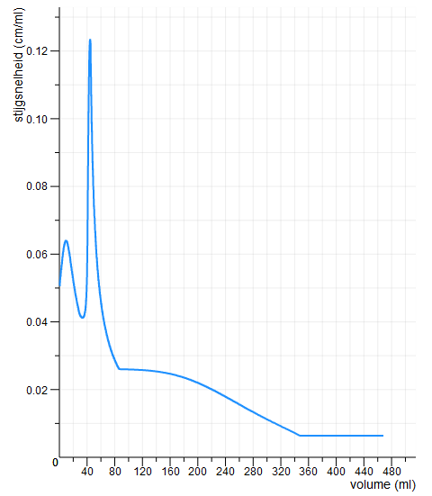

Activiteit 1
Ontwerp een glas
Je krijgt een stijgsnelheidsgrafiek van een onbekend glas te zien. Aan jullie de opdracht om een glas te ontwerpen dat bij de stijgsnelheidsgrafiek past. Er zijn meerdere glazen te bedenken die deze stijgsnelheidsgrafiek opleveren.
Bij het ontwerpen van het glas tekenen jullie eerste een gewone grafiek van het vullen van het glas. Het is namelijk makkelijker om op basis van zo'n grafiek een glas te ontwerpen dan direct vanaf de stijgsnelheidsgrafiek.
Het kan handig zijn om kladpapier te gebruiken ...
Daarna ontwerpen jullie het glas. Je kunt het glas niet vullen, of er automatisch een grafiek van laten tekenen. Jullie moeten het ontwerp van het glas beredeneren. Jullie beredenering schrijven jullie ook op.
De stijgsnelheidsgrafiek

Teken de gewone waterhoogte-volume grafiek die bij de stijgsnelheidsgrafiek past
De grafiek is ver naar rechts geschoven
Je kunt in je eigen grafiek de stijgsnelheid meten: komt de stijgsnelheid ongeveer overeen met die in de stijgsnelheidsgrafiek?
Ontwerp het glas dat bij de stijgsnelheidsgrafiek en de gewone grafiek past
Leg uit hoe jullie het glas hebben ontworpen en waarom dit glas de bijbehorende stijgsnelheidsgrafiek oplevert